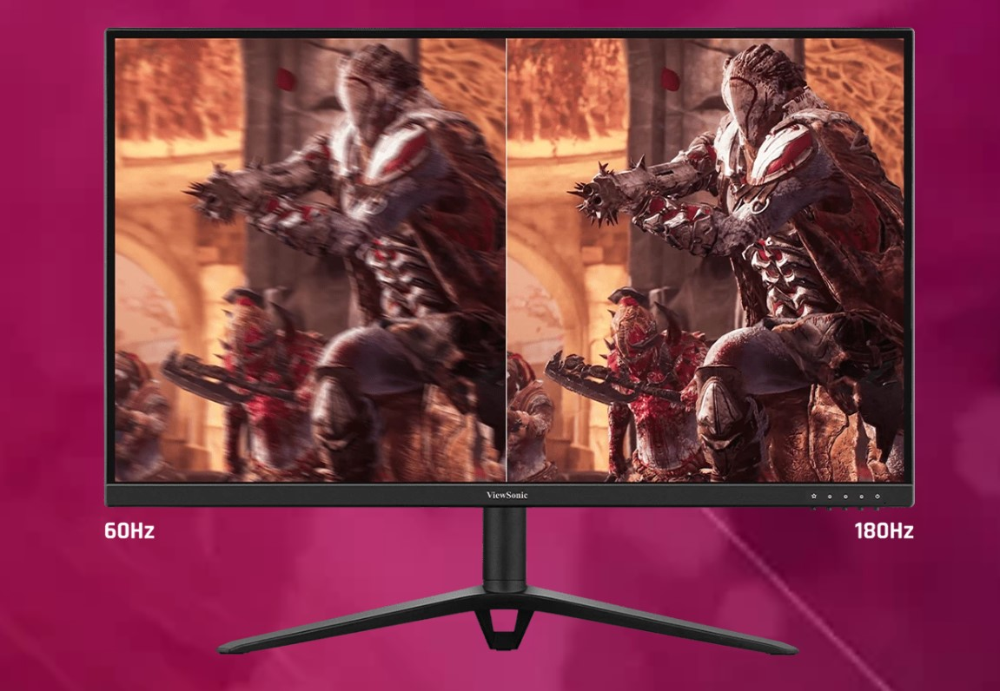

Незалежно від того, як часто ви граєте або коли ви граєте, ви завжди виграєте з монітором ViewSonic Omni VX2428. Потрійна сертифікація AMD FreeSync™ Premium, VESA Adaptive Sync та VESA clearMR дозволяє насолоджуватися грою без спотворень та підвищеною чіткістю зображення. Чіткі кадри та чудову передачу кольору забезпечує швидка IPS-панель, а висока частота оновлення 180 Гц у VX2428 забезпечує плавність зображення та мінімальну затримку введення. Ви не тільки будете займатись улюбленою справою - чи то виснажливими ігровими сесіями, чи то редагуванням відео та фото, чи офісними завданнями - ви працюватимете за витонченим монітором з чудовим дизайном.
Чим більше ви граєте, тим кращі ваші результати. Вам потрібно працювати, але життя - це не тільки робота. Завдяки рідкісній потрійній сертифікації AMD FreeSync Premium, VESA Adaptive Sync та VESA ClearMR ви отримуєте технологію захисту від розривів та розмиття, щоб насолоджуватися плавним зображенням навіть у самих динамічних іграх. Цей монітор має достатню потужність, щоб забезпечити вам перевагу вдень і вночі.
Гіперчутлива частота оновлення 180 Гц монітора OMNI VX2428 забезпечує бездоганну якість зображення в іграх і при редагуванні відео без необхідності розгону процесора. Плавне, бездоганне зображення дає вам перевагу точно влучати у ціль знову і знову, незалежно від того, наскільки швидко вона рухається. Коли кожен кадр має значення, ви не хочете нічого пропустити.
Цільтеся з точністю і реагуйте блискавично завдяки часу відгуку OMNI VX2428 0,5 мс (MPRT) / 1 мс (GTG), що забезпечує першокласну продуктивність та плавні переходи між пікселями з чіткістю і без розмиття у русі. Ця секретна зброя виведе вас у лідери, коли ви будете шліфувати сходинки ваших улюблених FPS, а також насолодитесь кожною захоплюючою сценою у фільмах.
Швидка IPS-панель OMNI VX2428 забезпечує чудову передачу кольору, що поєднує в собі високу точність і яскравість, тому ви можете повністю зануритися у гру. У поєднанні з широкими кутами огляду монітора у вас завжди буде найкраще місце для перегляду.

Завдяки винятковому контролю над регулюванням гами, який пропонує новітня технологія HDR10, ви отримуєте доступ до абсолютно нового рівня чіткості зображення та неперевершеної деталізації. Насолоджуйтеся глибоким контрастом, насиченими кольорами та яскравими деталями, досліджуючи потойбічні світи, переглядаючи святкові знімки або передивляючись улюблені фільми.

Крім того, захист від синього світла і технологія усунення мерехтіння запобігають втомі очей, тому ви зможете зануритися у гру, навіть у сутінковій зоні.
Більше не потрібно обирати між ПК та консоллю. Відчуйте свободу, яка приходить з декількома варіантами підключення, включаючи два порти HDMI 1.4 і один DisplayPort 1.4, які підтримують частоту оновлення 180 Гц, щоб ви могли підключити всі свої периферійні пристрої одночасно. Переходьте від одного до іншого, не витрачаючи жодної секунди на налаштування.